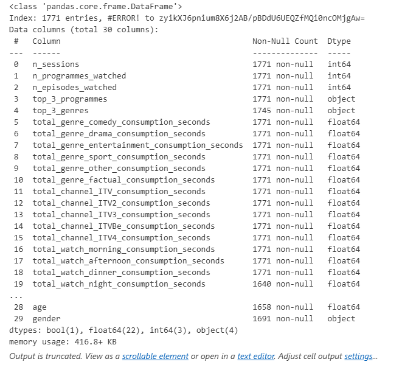

This project was developed as part of the ITV Data Science Challenge, focused on predicting how likely a user is to watch the ITVX exclusive series “A Spy Among Friends.” It explores user viewing behaviour, identifies engagement drivers, and develops machine learning models to support data-driven marketing and recommendation strategies.
Watch Detailed ExplanationThe dataset contained anonymised viewing information such as the number of episodes watched, unique programmes, favourite genres and channels, and session frequency. Data cleaning, EDA, and modelling were conducted using Python, Pandas, and Scikit-learn.
Three machine learning models—Decision Tree, Random Forest, and XGBoost—were developed to predict user engagement. After evaluation, XGBoost achieved the best performance with 90% accuracy, outperforming other models in precision and recall.
| Model | Accuracy | Precision | Recall |
|---|---|---|---|
| Decision Tree | 0.78 | 0.76 | 0.75 |
| Random Forest | 0.84 | 0.83 | 0.82 |
| XGBoost | 0.90 | 0.88 | 0.87 |
The model identified genre preferences, channel affinity, and viewing diversity as the most influential factors in predicting engagement. These insights can help ITV's data and marketing teams personalise recommendations and improve audience targeting strategies.
ITV_data_challenge.ipynb-Full Jupyter NotebookDIG_Step_Up_Viewing_Data_Strategy.xlsx-DatasetITV_Setup_Presentation.pptx-Presentation SlidesITV_Challenge_Explanation.mp4-Video Demonstration